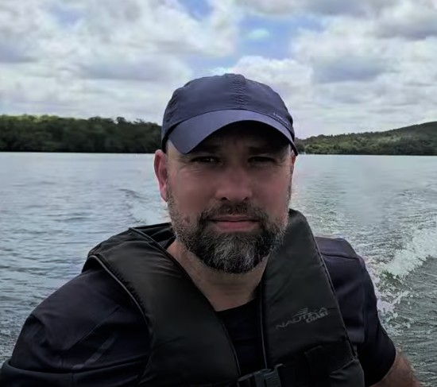
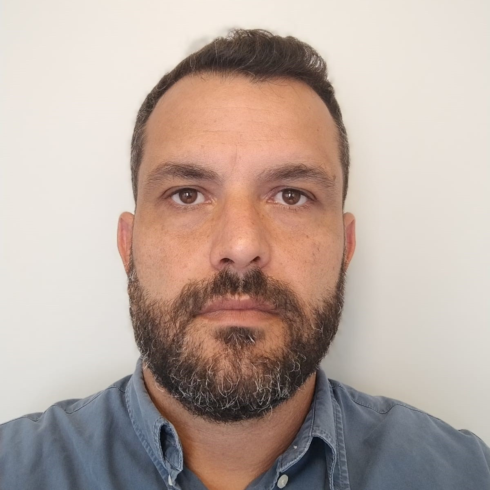
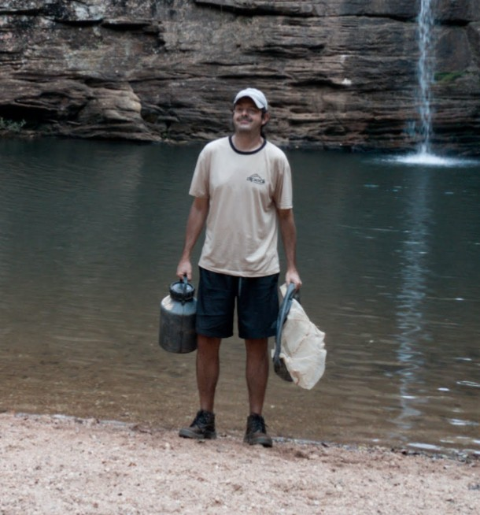
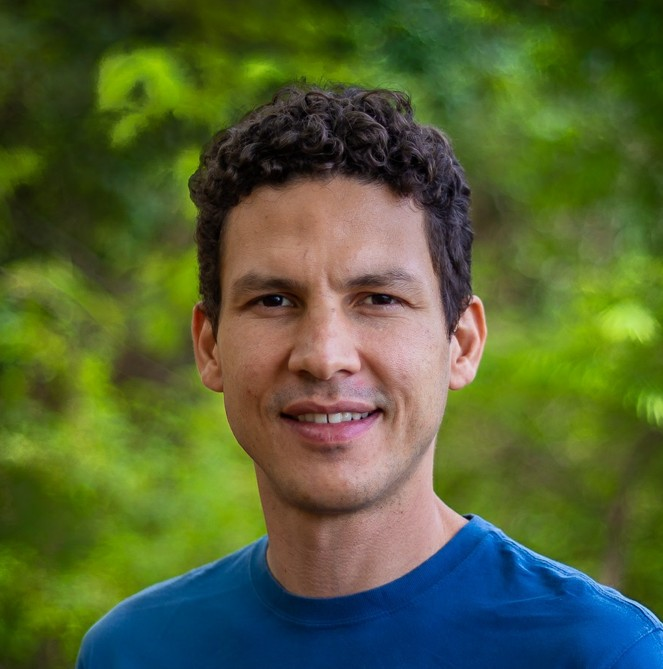

Time PISCES
Nosso time

Gilberto Nepomuceno Salvador, PhD
Biólogo formado pela Pontifícia Universidade Católica de Minas Gerais (PUC Minas) em 2003, com trajetória acadêmica e científica voltada para a ecologia e conservação da ictiofauna neotropical. Concluiu o mestrado em Zoologia de Vertebrados também pela PUC Minas, em 2011, e o doutorado em Ecologia pela Universidade Federal do Pará (UFPA), em 2019. Atualmente, atuo como bolsista do Instituto Chico Mendes de Conservação da Biodiversidade (ICMBio) no projeto de recuperação do pintado (Pseudoplatystoma corruscans). Além disso, atuo como colaborador no laboratório de Ecologia de Peixes da Universidade Federal de Minas Gerais (UFMG) investigando os impactos do rompimento da barragem de Fundão sobre a ictiofauna da bacia do rio Doce. Minha atuação tem sido direcionada à pesquisa e à proteção da ictiofauna neotropical, com especial atenção às drenagens de Minas Gerais e aos impactos da mineração, contribuindo significativamente para o entendimento dos processos ecológicos e dos desafios ambientais enfrentados pelos peixes de água doce da região.

João Pedro Corrêa Gomes, MsC
Biólogo com mais de 15 anos de experiência, mestre em Ecologia (UFLA) e graduado em Ciências Biológicas (UFMG). Especialista em Ictiologia, com sólida atuação na coordenação de projetos ambientais, captação de editais e formulação de estratégias de conservação. Experiência destacada na elaboração de listas de espécies ameaçadas e planos de manejo, com forte articulação entre órgãos ambientais, ONGs e instituições acadêmicas.

Tiago Casarim Pessali, MsC
Atualmente é colaborador do Laboratório de Ecologia de Peixes da UFMG e da Coleção de Peixes do Museu de Ciências Naturais da PUC Minas. Também é responsável técnico da Pisces Consultoria Ambiental Ltda. Possui experiência com ictiofauna das bacias do Leste Brasileiro e do Rio São Francisco, no Estado de Minas Gerais.
Sergio Alexandre Dos Santos
Tobias Antonio Barroso

Heron Oliveira Hilário, PhD
Biólogo, mestre em Bioquímica & Imunologia pela UFMG, doutor em Bioinformática pela UFMG, com ampla experiência na utilização de ferramentas moleculares para a detecção de espécies. Atualmente é também professor na PUC Minas, e integra o Laboratório de Genética da Conservação onde desenvolve pesquisas relacionadas ao aperfeiçoamento e uso de eDNA metabarcoding para o monitoramento da biodiversidade.
Renata Guimaraes Frederico, PhD
Possui graduação em Ciências Biológicas Licenciatura e Bacharelado pela Universidade Estadual de Londrina (2002), mestrado em Ciências Biológicas - Ecologia pelo Instituto Nacional de Pesquisas da Amazônia (2006) e doutorado em Biologia (Ecologia) pelo Instituto Nacional de Pesquisas da Amazônia (2014). Tenho experiência na área de Ecologia de ecossistemas aquáticos continentais, com ênfase em Conservação, atuando principalmente nos seguintes temas: modelagem de nicho ecológico, mudanças climáticas, impactos antrópicos e priorização espacial para conservação. Entre 2021 a 2023 trabalhei como perito no processo judicial do rompimento da barragem de fundão em Mina Gerais. Atualmente sou professora visitante na Universidade Federal do Maranhão do programa de pós-graduação em Ciências Ambientais. (Reridado do Lattes)